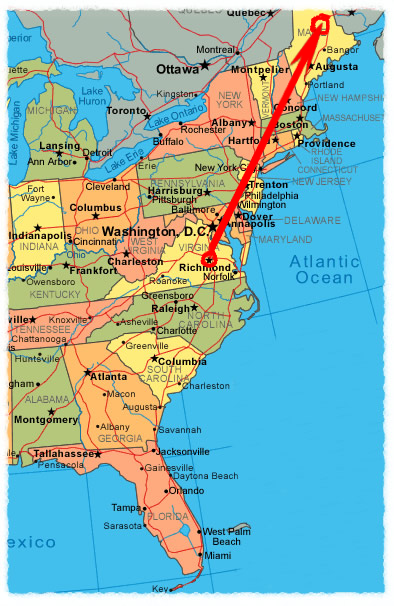
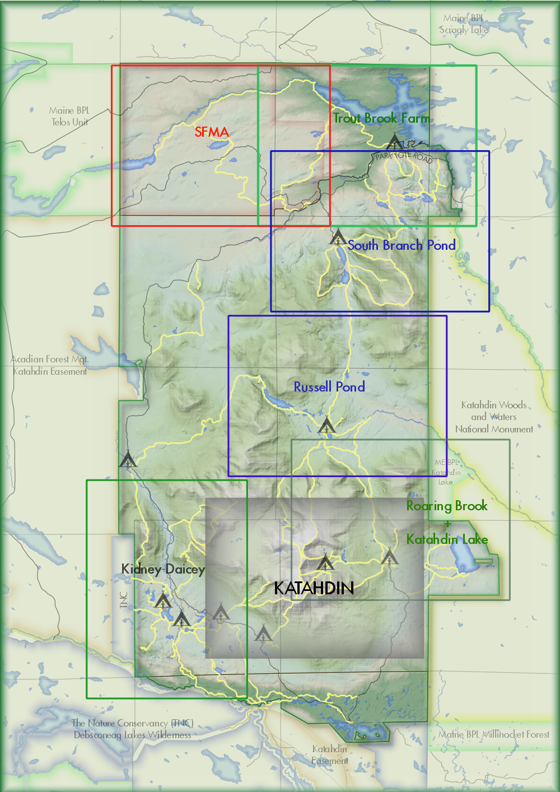

{kind=link}
This map indicates the travel path of John's disappearance. Starting from Belle Isle, John seemed to have traveled around 700-800 miles on the same day. Assuming, he was found merely only 2hrs or less after he was reported to disappear in a whole another state, no less in a densely wooded trail on Mount Katahdin, John would have to have traveled around 350-400 miles per hr.

Although it's not entirely impossible to do so by plane, the fact that he was found on a mountain trail with the nearest major airport being over a 100 miles away in Presque Isle and roughly 10 miles in a straight path to the Millinocket Municipal Airport, makes it seem quite an impossibility. This doesn't even account for the time needed to board the plane, drive to the park, and hike to the top of Mt. Kalahdin.


{kind=link}
The map to the left shows the entirety of Baxter State Park, covering over 200,000 acres of wilderness, which seems to be a perfect place to hide a body, but also quite treacherous, especially on Mt. Kalahdin.
The map to the right depicts Mt Kalahdin and its surrounding trails, in which Pork was found. The trails surrounding Mt. Kalahdin are quite treacherous and strenous from what I've heard, requiring around 4000 ft. of elevation gain. To me, it doesn't seem worth it to hide a body there no matter, how well hidden it is, especially if carrying a dead body. Additionally, a round trip for a Katahdin hike is said to take around 8-12 hrs, which is definitely beyond the time of when John disapeared and discovered.